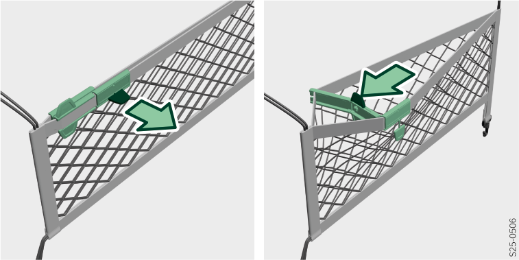

<!-- topicId: 6db5ba25743b9cd8cc988bb399b8c02e_3_fr_FR | type: topic -->
<h1>Utilisation</h1>
<html data-dyxml-version="2"><div lang="fr-FR"><div class="topic-content"><section data-type="topic-allgemein" data-dl-contains="block" id="ID_872b4f6e0181a64fac144525726e1a30-67f88ba90181a64fac1445254202d652-fr-FR"><p id="ID_3ebb45cb0181a64fac144525460f2bfd-67f88ba90181a64fac1445254202d652-fr-FR"></p><div data-role="block" data-type="block" id="ID_c2bee0320181a64fac1445255246ad9c-67f88ba90181a64fac1445254202d652-fr-FR" hasIllu="true"><div data-type="illu" id="ID_cfecf08a35d8ffe1ac1445257c6ca253-67f88ba90181a64fac1445254202d652-fr-FR"><div data-class="vw-layout-narrow" data-dl-wrapper="figure" id="d5511329e34"><figure id="ID_ec2b14a4aba6d35cac1445250a228413-67f88ba90181a64fac1445254202d652-fr-FR" data-role="" data-type="" data-position=""><div><a data-fancybox="group" media-link="" class="fancybox" data-href="../media/img4dd0ff7e90be26c1ac1445250a49e46b_1_--_--_PNG_3x.png" data-options="{&#34;buttons&#34;:[&#34;fullScreen&#34;, &#34;thumbs&#34;, &#34;close&#34;],&#34;hash&#34;:false}"></img></a></div></figure></div></div></div><div></div></section></div></div></html>